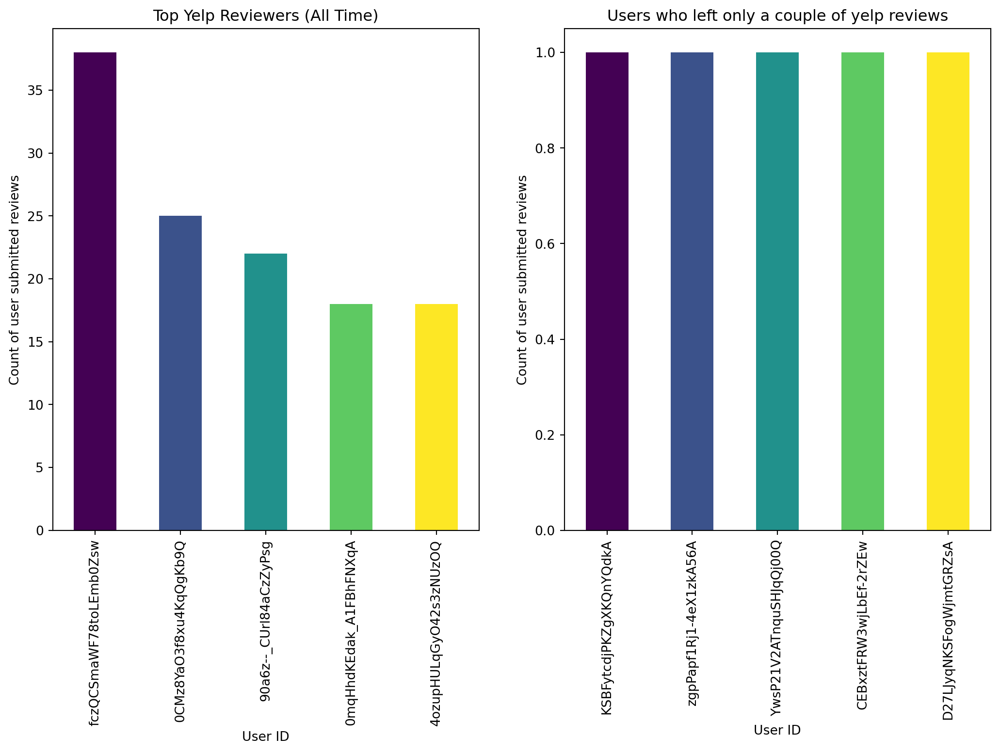
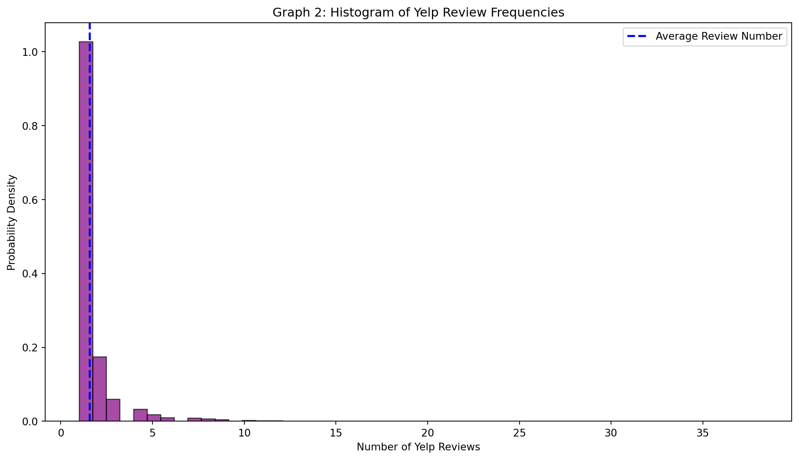
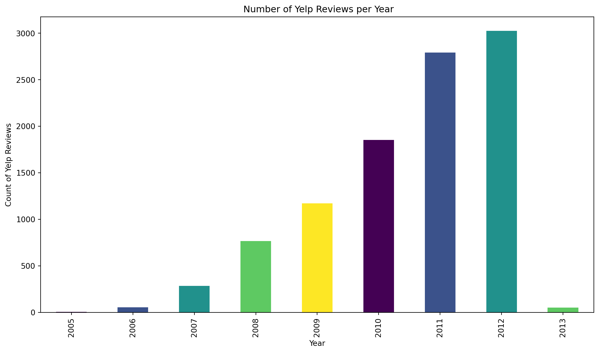

import nltk
from nltk.probability import FreqDist
from nltk.tokenize import word_tokenize, RegexpTokenizer
from nltk.stem import WordNetLemmatizer, PorterStemmer
from sklearn.feature_extraction.text import TfidfVectorizer
from sklearn.cluster import KMeans
import string
from nltk.corpus import stopwords, wordnet
from nltk.util import ngrams
import pandas as pd
import re
import matplotlib.pyplot as plt
import seaborn as sns
from nltk.sentiment.vader import SentimentIntensityAnalyzer
from textblob import TextBlob
import numpy as np
vader = SentimentIntensityAnalyzer()
from collections import Counter
lang="english"Sentiment Analysis
We wanted to analyze a bit more about the electronics market. I wanted to conduct a sentiment analysis in the electronics brand market on amazon.
In sentinment analysis,
#Downloading the needed nltk data
nltk.download('punkt') # only run this once
nltk.download('stopwords') # only run this once
nltk.download('wordnet') # only run this once
nltk.download('omw-1.4')# only run this once
nltk.download("vader.lexicon")# only run this once[nltk_data] Downloading package punkt to
[nltk_data] /Users/madelinesands/nltk_data...
[nltk_data] Package punkt is already up-to-date!
[nltk_data] Downloading package stopwords to
[nltk_data] /Users/madelinesands/nltk_data...
[nltk_data] Package stopwords is already up-to-date!
[nltk_data] Downloading package wordnet to
[nltk_data] /Users/madelinesands/nltk_data...
[nltk_data] Package wordnet is already up-to-date!
[nltk_data] Downloading package omw-1.4 to
[nltk_data] /Users/madelinesands/nltk_data...
[nltk_data] Package omw-1.4 is already up-to-date!
[nltk_data] Error loading vader.lexicon: Package 'vader.lexicon' not
[nltk_data] found in indexFalse#reading in the yelp review data
yelp = pd.read_csv('data/yelp.csv')
print(yelp.info())<class 'pandas.core.frame.DataFrame'>
RangeIndex: 10000 entries, 0 to 9999
Data columns (total 10 columns):
# Column Non-Null Count Dtype
--- ------ -------------- -----
0 business_id 10000 non-null object
1 date 10000 non-null object
2 review_id 10000 non-null object
3 stars 10000 non-null int64
4 text 10000 non-null object
5 type 10000 non-null object
6 user_id 10000 non-null object
7 cool 10000 non-null int64
8 useful 10000 non-null int64
9 funny 10000 non-null int64
dtypes: int64(4), object(6)
memory usage: 781.4+ KB
NoneWe have about 10,000 rows of yelp review text data that we are going to analyze for key words and commonality among reviews.
First, I am pulling out the year and month from the date column and creating 2 new columns reviewYear and reviewMonth respectively. This will allow me to see if there are any chronological changes in the usage of different words and also the change in sentiment over time.
yelp["date_column"] = pd.to_datetime(yelp["date"])
yelp["year"] = yelp["date_column"].dt.year
yelp["month"] = yelp["date_column"].dt.month
yelp["day"] = yelp["date_column"].dt.month
yelp["day_of_week"] = yelp["date_column"].dt.day_name()Now I want to visualize some descriptive analytics to see what is present in the database.
plt.rcParams["figure.figsize"] = [13, 7]
color = plt.cm.viridis(np.linspace(0, 1, 5))
fig, (ax, ax2) = plt.subplots(ncols=2)
#One Graph for the Top Yelp Reviews of All Time
yelp['user_id'].value_counts().head().plot(kind='bar', color = color, ax=ax, title='Top Yelp Reviewers (All Time)');
ax.set_xlabel("User ID")
ax.set_ylabel("Count of user submitted reviews")
#One Graph for the Users who leave only one review (we expect this to be more)
yelp['user_id'].value_counts(ascending=True).head().plot(kind='bar', color = color, ax=ax2, title='Users who left only a couple of yelp reviews');
ax2.set_xlabel("User ID")
ax2.set_ylabel("Count of user submitted reviews")Text(0, 0.5, 'Count of user submitted reviews')
Based on the graph above, we can see that there are a couple of “power” users who have left a much larger number of yelp reviews, between 20-35. However,the majority of users only leave about 1 -2 reviews. The average review number is 1.56.
user_counts = yelp["user_id"].value_counts()
user_counts = user_counts.to_frame()
user_count_average = user_counts["count"].mean()
print(user_count_average.round(2))1.56From the histogram below we are able to visualize the same occurrence that we see in graph 1. There are a couple of power users who have submitted more than 5 yelp reviews, but the majority of Yelp users in this database have only submitted 1-2 reviews.
plt.hist(user_counts, bins=50, edgecolor='black', color= "purple", alpha=0.7, density=True)
plt.title('Graph 2: Histogram of Yelp Review Frequencies')
plt.axvline(user_count_average, color = 'blue', linestyle = 'dashed', linewidth = 2, label = "Average Review Number")
plt.xlabel('Number of Yelp Reviews')
plt.legend(loc='upper right')
plt.ylabel('Probability Density')
plt.show()
yelp.groupby("year")["year"].value_counts().plot(kind='bar', color=color, title=' Number of Yelp Reviews per Year').set(xlabel='Year', ylabel='Count of Yelp Reviews')
Tokeninzing the input database, specifically the ‘text’ column
Before we can begin any heavy analysis on the texts, we want to conduct some text preprocessing steps. Part of the preprocessing stage involves lowercasing the text and removing any punctuation. This allows us to easily remove any contractions that might be in the text and pull them out for proper analysis.
#first want to lowercase all of the text
yelp["text_list"] = yelp["text"].apply(lambda x: x.lower())
#want to remove all the punctuation
yelp["text_list"] = yelp["text_list"].apply(lambda x: re.sub(r'[^\w\s]','',x))Below is the contraction dictionary I started to make to clean up the yelp reviews text. In addition to this, I will also be putting in common slang terms to clean them up. These are terms such as “u” for “you”, “r” for “are”, “n” for “and”, etc.
#Contraction dictionary to transform the contractions into their unconjugated form.
contractions_dict = {
"i'm": "i am",
"didnt": "did not",
"ive": "i have",
"dont": "do not",
"wasnt": "was not",
"werent": "were not",
"shouldnt": "should not",
"wouldnt": "would not",
"couldnt": "could not",
"isnt": "is not",
"arent": "are not",
"hasnt": "has not",
"havent": "have not",
"hadnt": "had not",
"wont": "will not",
"youre": "you are",
"theyre": "they are",
"youve": "you have",
"theyve": "they have",
"weve": "we have",
"itll": "it will",
"u": "you",
"ur": "your",
"r": "are",
"im": "i am",
"thats": "that is",
"whats": "what is",
"lets": "let us",
"n": "and",
"doesnt": "does not",
"cant": "can not",
"couldve": "could have",
"shouldve": "should have",
"wouldve": "would have",
"mustve": "must have",
"youll": "you will",
"theyll": "they will",
"1" : "one",
"2": "two",
"3": "three",
"4": "four",
"5": "five",
"10": "ten"
}
yelp["text_list_tokens"] = yelp["text_list"].apply(lambda x: word_tokenize(x))
yelp["text_list"] = yelp["text_list_tokens"].apply(lambda x:' '.join(contractions_dict[word] if word in contractions_dict else word for word in x))
yelp["text_string"] = yelp["text_list"].apply(lambda x:''.join(x))
lemmatizer = WordNetLemmatizer()
yelp["text_string"]= yelp["text_string"].apply(lambda x: [lemmatizer.lemmatize(word, wordnet.VERB) for word in x.split()])Based on some inital analysis, I decided to go in and add some additional stop words to the stop word list.
stop_words = set(stopwords.words("english"))
custom__stopwords = {'also', 'try','make', 'like', 'take', 'go', 'get', 'would','eat','two','always','next', 'door', 'last', 'night','right','still','one','first','use','second','new','three','love','ask','see','way','work','need', 'lot', 'better','find', 'great','little', 'say', 'food','best', 'us','give','pretty','back','couple','weeks','ago', 'know', 'truth','nice','come','could','make','order', 'time', 'even', 'though', 'much', 'got', 'place', 'think','go', 'really', 'well', 'look', 'want'}
stop_words.update(custom__stopwords)